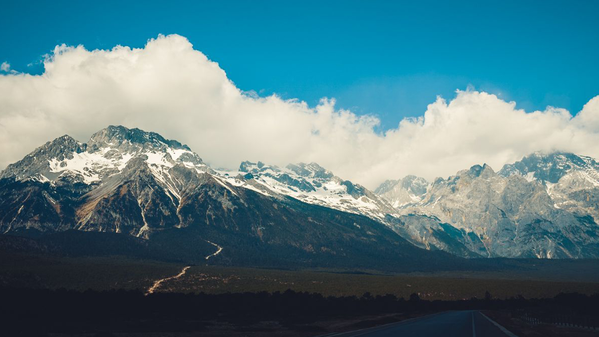
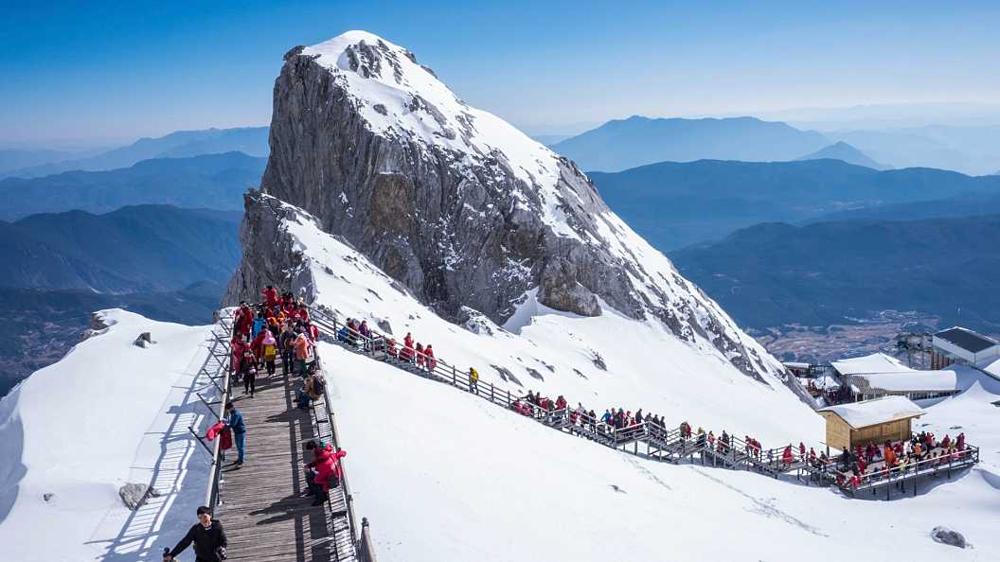
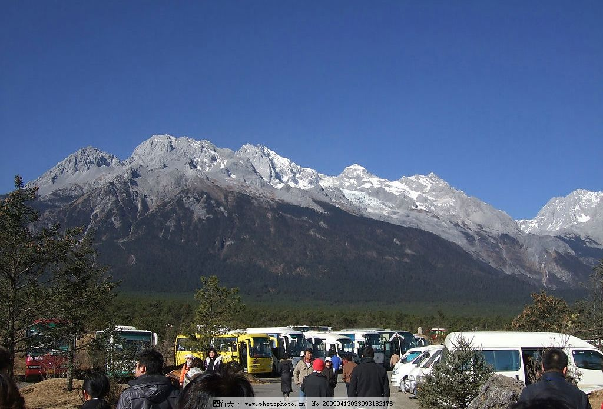

玉龙雪山自由行出发前的准备
玉龙雪山为云南省丽江市境内雪山群，地处东经100°4′2″～100°16′30″、北纬27°3′2″～27°18′57″之间，在丽江北面约15千米处，全长75千米， 是北半球最近赤道终年积雪的山脉，隔江西与中甸雪山、东与绵绵山相并列，北自三江口，向南延伸到北纬27°，如扇面向古城展开。全山的13座山峰由南向北纵向排列， 主峰扇子陡最高处海拔5596米，终年积雪，发育有亚欧大陆距离赤道最近的温带海洋性冰川。
一、第一种常规玩法
1.游玩方式及适合人群
买索道的票然后上雪山，走玉龙雪山的常规路线，途径甘海子、蓝月谷、冰川公园等地，适合绝大多数的游客。
2.门票索道等具体费用
玉龙雪山景区门票：100元/人;丽江古城维护费：80元/人;景区内环保车费用：20元/人;景区电瓶车费用：50元/人;大索道：120含往返; 云杉坪小索道：40元/人;牦牛坪中索道：40元/人;

3.能看到的景点有哪些？
总的来说，来玉龙雪山一定要游玩的景点是冰川公园、蓝月谷、甘海子、还有《印象丽江》必看的表演。
甘海子
冰川公园
蓝月谷
